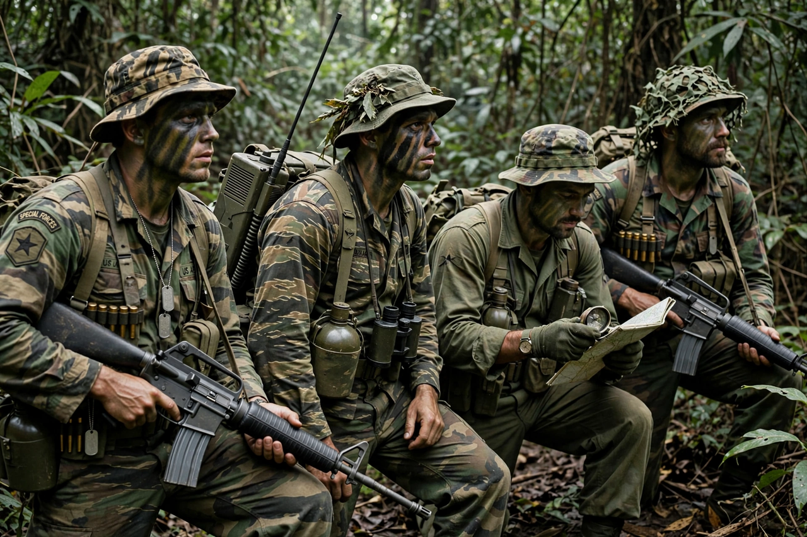

| Military Assistance Command, Vietnam – Studies and Observations Group | |
|---|---|
| Active | 24 January 1964 – 1 May 1972 |
| Country | United States |
| Branch | Joint special operations |
| Type | Unconventional warfare unit |
| Role | Strategic reconnaissance, covert action, psychological operations |
| Garrison/HQ | Saigon, South Vietnam |
| Nickname | SOG, MACSOG |
| Engagements | Vietnam War |

The Military Assistance Command, Vietnam – Studies and Observations Group (MACV-SOG) was a highly classified, multi-service United States special operations unit which conducted covert unconventional warfare operations before and during the Vietnam War. Established on 24 January 1964, it was commanded first by Colonel Clyde Russell and later by Colonel Donald Blackburn and Colonel John Singlaub, among others.
SOG conducted strategic reconnaissance missions in South Vietnam, North Vietnam, Laos and Cambodia; carried out the capture of enemy prisoners, rescued downed pilots, and conducted rescue operations to retrieve prisoners of war throughout Southeast Asia. Its operations along the Ho Chi Minh trail were among the most dangerous assignments of the war.
SOG was created because the United States, under the constraints of the Geneva Accords and its own policy, could not openly conduct ground operations in Laos and Cambodia, where North Vietnamese forces operated freely. The unit drew personnel from the Army Special Forces, Navy SEALs, Air Force and Marine Corps reconnaissance, working alongside South Vietnamese and indigenous troops such as the Montagnards.
Its best-known cross-border program was Operation Prairie Fire in Laos, with a counterpart in Cambodia. Reconnaissance teams of typically a dozen men inserted by helicopter deep into enemy territory to observe troop movements, emplace wiretaps and sensors, and call in air strikes. Casualty rates were extraordinarily high; some teams were lost entirely. SOG personnel earned numerous decorations, including Medals of Honor.
SOG was deactivated on 1 May 1972 as American involvement wound down, and its existence remained classified for years afterward. See also South Vietnam and the Vietnam War.